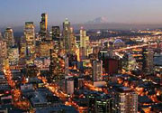
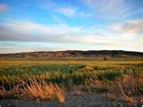
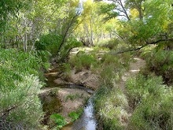

In the field
Viewsheds: Western Washington State

ARIES' viewshed analysis is being used to help planners understand
the consequences of development on property value through impacts
on aesthetic views. Aesthetic view values were computed and used to
determine property value. Views of mountains and water bodies provide
value to homeowners and municipal tax bases. City and regional land
use policies can either improve or degrade these values over time.
Open space proximity: Western Washington State
ARIES' proximity analysis is being used to help planners understand the consequences of development on property value through impacts on aesthetic views and open space proximity. Careful open space planning can improve both property values and quality of life for residents.
Viewsheds: San Pedro River, Arizona

Viewsheds in the arid west are particularly valuable when they contain views of green vegetation - forests, wetlands, riparian areas. Views are negatively impacted by large infrastructure development such as transmission lines and mining projects. Careful siting of such infrastructure is thus important in order to maintain view quality in the rural west. Photo credit: R.Weller/Cochise College.
Open space proximity: San Pedro River, Arizona
Proximity to riparian areas, water, and green vegetation is highly valued in arid and semiarid environments. With increasing stress on the west's water resources, quantifying values like viewsheds, proximity, and recreational potential is important in supporting sound water management. Photo credit: R.Weller/Cochise College.